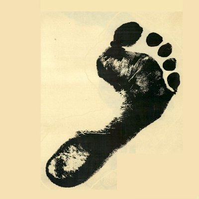

The ArtWalk Deep Ellum Archive is a developing digital record dedicated to preserving materials, history, and cultural memory from Deep Ellum between 1985 and 1997.
This archive collects photographs, flyers, printed materials, and community documentation to support long-term historical preservation.
This project is actively under development as materials are gathered, organized, and cataloged.